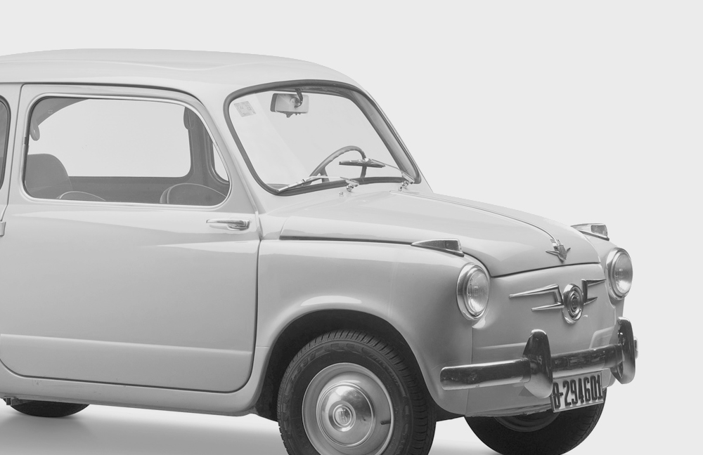
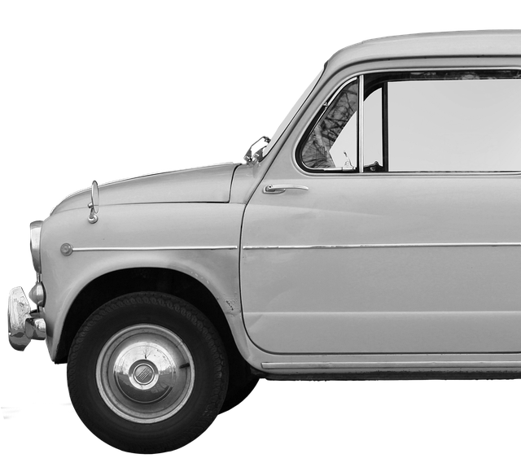
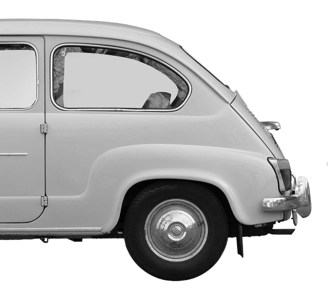
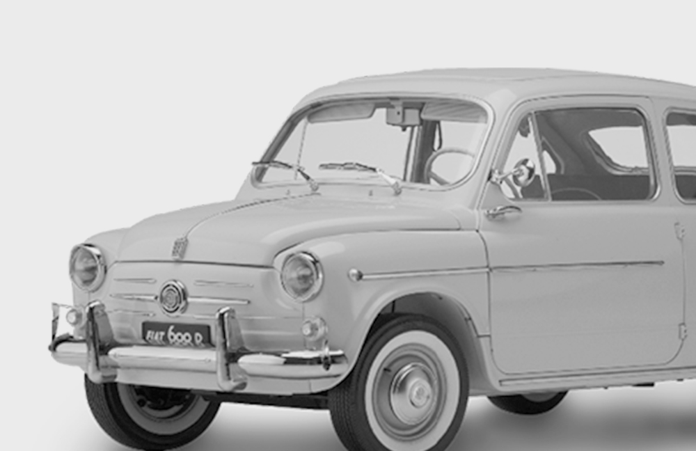

| Classic | Search | Home Gallery Contact |
| Fiat 600 | ||
|  |  |  |
|  | ||
|
Get on board the new Fiat 600 and experience the advantages of having a plus in your way of driving. On board your vehicle, you protected wherever you go. Your new Fiat 600 will be able to make emergency calls from the ceiling light*, contact a dedicated assistant or request roadside assistance, directly from the vehicle touch screen or via the FIAT App. |
A world that allows you to exchange data via the Internet, with your FIAT application. Benefit from the valuable advice provided by your brand and enjoy more safety, comfort and pleasure with the latest infotainment features while saving time and money. Because it is not possible to negotiate with your security or with your need for comfort, the offer of connected services is now simplified with the possibility of enjoying 2 new packs.
CONNECT ONE (RED) and Fiat: a unique partnership that fights health emergencies and, more generally, pandemics with every purchase of a (600)RED, creating the most ethical and relevant series. (RED) is an organization that fights global health emergencies like AIDS and COVID: every time you buy a (RED) product, your purchase triggers a donation to the Global Fund to support a range of prevention, treatment, counselling, testing, education and care services to the communities most in need. That’s why we’ve proudly joined this experience and created the new (600)RED: to let you be part of it. Fiat, Jeep and RAM have committed, through the partnership with (RED), and through it, to donate a minimum of 4 million dollars to The Global Fund between 2021 and 2023 to help fight health emergencies like COVID-19 and AIDS. Each (FIAT)RED vehicle is a (RED) Product and it is part of this commitment. |
|